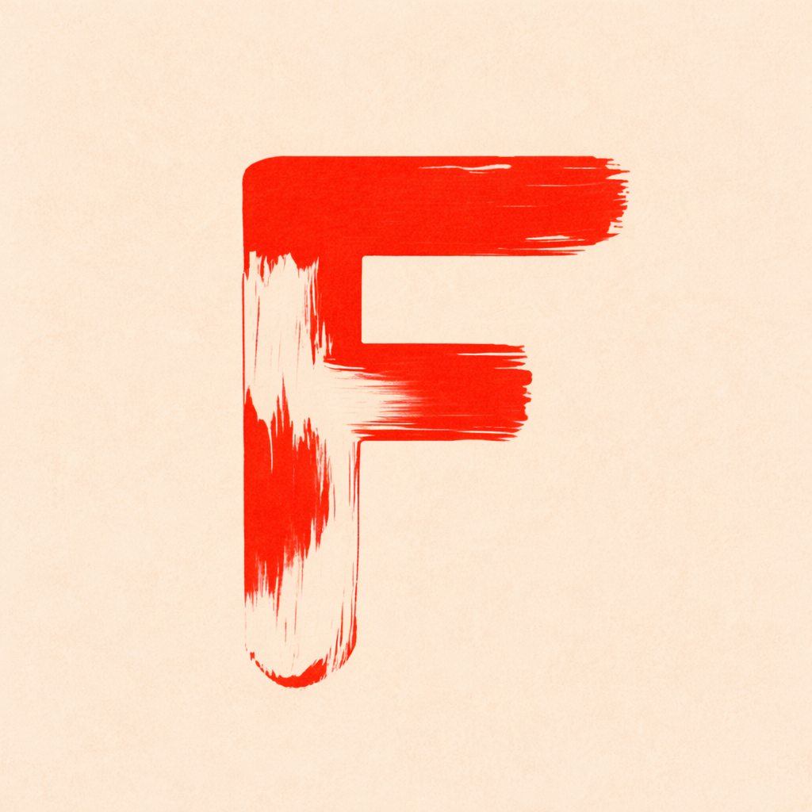

Owner access
Unlock the newsroom
Enter your private newsroom key to open the editor and use the publish controls. This is a client-side lock for the editor page.

Fwiend World News DeskPrivate newsroom
Create news stories from reorderable text, image, and video sections. Unlock the desk with your private newsroom key, link your site file once, then publish without picking files again on supported browsers.
This newsroom is protected by a private key check and can write to your article data file directly on supported browsers. Once linked, the site can remember that file in this browser for faster publishing. True server-side security would still need a backend.
Owner access
Enter your private newsroom key to open the editor and use the publish controls. This is a client-side lock for the editor page.